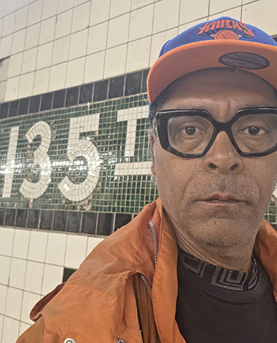

Bachelor of Science in Electrical Engineering: Howard University, Washington D.C.
Brooklyn Technical High School
Cisco Certified Network Associate - CCNA (expired)

Anthony De Silva
Founder & Principal of Uptown Polymath LLC
Anthony De Silva is the Founder and Principal of Uptown Polymath LLC, bringing together more than three decades of experience in electrical engineering, telecommunications, network infrastructure, technology management, and digital innovation.
A graduate of Howard University with a Bachelor of Science in Electrical Engineering, Anthony has built an extensive professional career designing, managing, and implementing advanced customer networks for major telecommunications companies, including Verizon, Bell Atlantic, NYNEX, New York Telephone, Con Edison Communications.
His background spans telecommunications engineering, fiber-optic networks, wireless communications, computer networking, infrastructure development, and technology project management. This extensive technical foundation provides a unique perspective on how technology, information, and data can be transformed into practical business opportunities.
At Uptown Polymath LLC, Anthony applies this multidisciplinary experience to the evolving world of digital marketing and analytics. His vision is to bridge the gap between technology, data intelligence, digital communications, and business strategy.
The company focuses on leveraging digital technologies, analytical insights, and innovative marketing approaches to help businesses strengthen their online presence, understand their audiences, improve engagement, and make more informed business decisions.
Anthony believes that successful digital marketing requires more than visibility. It requires strategic thinking, intelligent use of data, technological understanding, and the ability to recognize opportunities in an increasingly connected world.
His professional philosophy combines engineering precision, analytical thinking, creative problem-solving, and entrepreneurial vision.
Through Uptown Polymath LLC, Anthony is building a forward-thinking business centered on the intersection of technology, digital marketing, analytics, and innovation.
Vision
To combine technology, data, and creative intelligence to develop innovative digital solutions that help businesses compete, grow, and succeed in the modern digital economy.Professional Background
- Electrical Engineering- Digital Electronics and Microprocessor Programming
- Telecommunications Infrastructure Implementation and Management
- Project Engineering and Construction Project Management
- Optical Transport Engineering
- Cisco Network Engineering and Administration